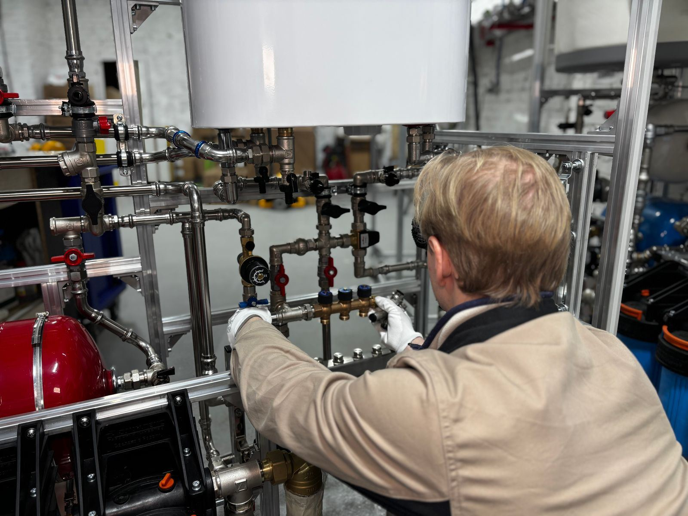

A water heater has two slow enemies: sediment and corrosion. Sediment comes from minerals that separate out as water is heated and sink to the bottom of the tank, where they cut efficiency, cause popping and rumbling on gas models, and overheat the steel or bury the lower element on electric ones. Corrosion is held back by the anode rod, a sacrificial rod of magnesium or aluminum that wears away so the tank lining is spared. Neither one is visible from the outside, and by the time a homeowner notices, the tank is often leaking. That is the reason maintenance matters for Elk Grove, CA homes: it interrupts both problems while they are still cheap to fix.
We work through a full checklist every time. The tank is drained and flushed to clear the sediment layer. The anode rod comes out for inspection and is swapped when little of it remains. The T&P relief valve is tested so we know it will open under pressure and close again cleanly. Gas heaters get a look at the burner, pilot assembly, thermocouple or flame sensor, flue, and draft. Electric heaters get element and thermostat testing and a check of the wiring connections. We also measure the air charge in the expansion tank, check the water pressure, set the thermostat to a scald-safe level unless a mixing valve allows higher storage, and inspect the drain valve, connections, and pan.
Tankless systems are included. In place of a sediment flush, they need periodic descaling, since hard water leaves mineral deposits in the heat exchanger that restrict flow and reduce efficiency. We isolate the unit, circulate a descaling solution through it, clean the inlet filter, check the vent and condensate line, and look at the error history for patterns. Whatever type you have, you receive a plain summary of the unit's condition and any parts approaching the end of their life. For water heater maintenance in Elk Grove, call (279) 241-0663.
Most of our service calls are for Water Heater Repair in Elk Grove and Water Heater Replacement in Elk Grove. Either is a good place to start.

How to Tell Something Is Wrong
Recognizing the warning signs early can save you money and keep a slow drip from turning into a flooded utility room. Watch for these telltale signs that professional help is needed:
- Higher gas or electric costs for the same routine
- A rotten-egg smell from the hot water
- Water in the drain pan or on the floor near the heater
- A water heater that has never been flushed or inspected
- Temperature swings or reduced flow from a tankless heater
- Rusty or discolored hot water at the tap
- A tank that pops and knocks during a heating cycle
- Less hot water available than when the tank was new
A Slow Leak Never Stays Slow
Most water heater failures start small: a popping sound from sediment, a damp spot under the drain valve, or a shower that goes lukewarm a few minutes sooner each week. If you notice any of these signs, contact Elk Grove Water Heater at (279) 241-0663 for a prompt inspection.
No Hot Water? We Can Help.
One call gets a technician scheduled and a clear price before any work starts.
Call (279) 241-0663 TodayWhat Homeowners Ask Us Most
Why Hire a Professional for Water Heater Maintenance?
Homeowners can handle the basics: keep the area clear, watch for drips, and pay attention to new sounds. The rest carries more risk than it looks. Flushing involves scalding water and an old plastic drain valve that may crack or refuse to seal. Anode rods are often seized in place and need significant force, sometimes with a flexible rod for low-clearance spaces. An older T&P valve may not reseat once tested, which leaves you with a drip and a replacement to arrange. And on gas heaters, the burner and vent affect how combustion gases leave the house, which is not a place to guess.
We come prepared for what an older heater throws at us: replacement drain valves, anode rods sized for your tank, flexible anodes for tight clearances, T&P valves, and meters for testing elements and thermostats. For tankless systems, we bring the pump and descaling setup. Just as important, we know what to look for, from early corrosion at the fittings to a thermocouple starting to weaken, so you can fix small things before it becomes a failure. The goal is simple: a heater that lasts longer, runs more efficiently, and does not surprise you with a leak.
What to Expect From Our Team
Every visit follows a step-by-step method built around testing first and replacing parts only when the readings call for it. Here's how we handle water heater maintenance from start to finish:
Initial Inspection
First, we look over the tank, fittings, and pan, test the relief valve, and confirm the venting drafts properly or the elements test within range.
Sediment Flush
Sediment gets cleared through the drain valve until the water comes out clean, and we check that the valve closes without dripping.
Anode and Expansion Tank Check
The anode shows how well the tank is protected, and the expansion tank check confirms thermal expansion is being absorbed.
Settings and Report
We leave you with a clear summary: what is healthy, what is wearing, and what to plan for next.
Questions About Water Heater Maintenance?
We give honest advice and upfront pricing on every job, big or small.
Call (279) 241-0663 NowWater Heater Care Tips From Our Technicians
A few preventive steps can help you avoid a cold shower or a wet floor down the road. Follow these tips from our technicians:
- Have the anode rod checked every few years and replaced when it is mostly gone
- Keep at least a couple of feet clear around the heater for air and service access
- Check the drain pan and fittings every few months for drips or rust
- Avoid turning the tank up past 120 degrees unless a mixing valve is installed
- Descale tankless units once a year, or more often in hard water
- Schedule a flush every year, or every six months if you have hard water
- Ask about water treatment if flushing turns up heavy mineral buildup
Should You DIY or Call a Pro?
A few tasks, like checking the temperature setting or lifting the relief valve lever to test it, are fine for homeowners, but most water heater work involves gas lines, venting, 240-volt circuits, or a tank full of scalding water, and that belongs with a professional. Here's how the two approaches stack up:
| Factor | DIY Attempt | Professional Service |
|---|---|---|
| Flushing | Sediment clogs the valve midway | Valve checked and replaced if needed |
| Anode Rod | Hard to remove without special tools | Pulled, inspected, and replaced when consumed |
| Relief Valve | Test skipped entirely | Proper discharge line confirmed |
| Gas Components | Thermocouple issues missed | Burner, pilot, and draft checked |
| Tankless Care | Descaling done incorrectly | Error history reviewed |
| Expansion Tank | Waterlogged tank missed | Precharge measured and adjusted |
Book a Visit Today
Cold showers and damp floors don't get better on their own. Elk Grove Water Heater can have a technician headed your way soon.
Call (279) 241-0663 NowCommunities We Cover
Our technicians handle water heater maintenance throughout Elk Grove and the surrounding communities, with the same upfront pricing everywhere we work.